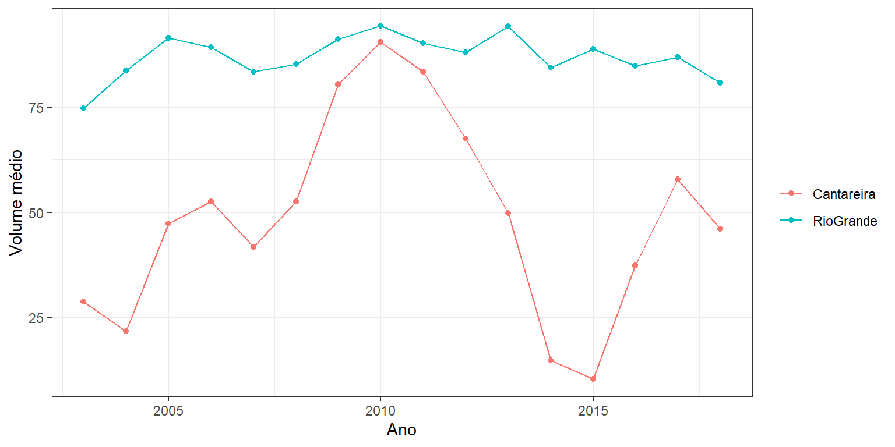
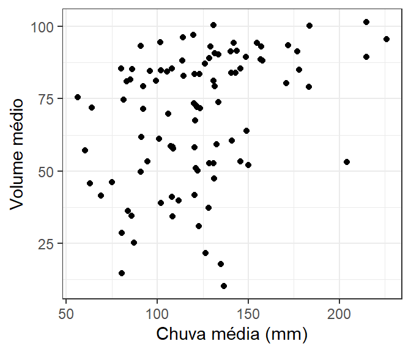

Capítulo 5 Descrevendo populações e amostras
5.1 População, amostra e unidade amostral
Em estatística, população se refere a todos os elementos sobre os quais queremos tirar conclusões. É comum a confusão entre os termos população estatística e população biológica (nas ciências naturais) ou população humana (em ciências sociais). No entanto, população estatística refere-se ao conjunto de medidas que podem ser obtidas como resultado de um experimento ou de um estudo observacional e não pode ser confundido com conjuntos de pessoas ou organismos. As medidas que compõem a população estatística portanto, podem ser pesos, temperaturas, velocidades, tempos de reação, entre outras, a depender das características de um estudo particula. A abrangência da população estatística depende do contexto e do escopo da pergunta que se pretende responder.
Suponha um estudo para descrever o comprimento do lambari Deuterodon iguape em riachos do litoral de São Paulo. A população estatística não são os peixes em si, mas o comprimento de cada indivíduo. Dado o escopo do estudo, a população estatística abrange somente comprimentos dos organismos que habitam bacias do litoral de São Paulo. Suponha agora que desejamos estudar a diversidade de espécies de peixes em bacias costeiras do litoral de São Paulo. Neste caso, a população estatística seria constituida de um índice de diversidade calculado para cada uma das bacias costeiras do litoral. Fica claro que, neste caso, população estatística não tem qualquer relação com população biológica, mas sim com uma medida obtida do conjunto de espécies que habitam cada bacia.
Nos dois exemplos acima é inviável obtermos informações de todos os elementos que compõem a população estaística. Para o exemplo dos comprimento, temos provavelmente alguns milhares de peixes na Bacia e consequentemente, o mesmo número de comprimentos individuais. O número de Bacias costeiras no litoral do Estado de São Paulo é bem menor, porém ainda é inviável mensurar a diversidade de espécies em todas elas. Um censo ocorre nos raros exemplos em que é possível mensurar todos os elementos da população estatística. Entretanto, a prática em estatística lida com a maioria dos casos em que mensuramos um subconjunto da população estatística, definido como uma amostra.
Finalmente, unidade amostral é definida como um único elemento da população estatística. A unidade amostral deve ser a menor unidade independente associada ao estudo. A necessidade das unidades amostrais constituirem elementos independentes é um dos pressupostos centrais da estatística e suas implicações ficarão mais claras quando tratarmos do processo de amostragem. No exemplo dos lambaris, unidade amostral é o comprimento mensurado em um indivíduo da espécies de interesse, enquanto no exemplo das bacias costeiras, as unidades amostrais são cada os valores de diversidade calculado para cada bacia.
População estatística: todos os elementos que podem compor uma amostra. Podem ser medidas como comprimentos, temperaturas, velocidades, etc.
Unidade amostral: um único elemento da população.
Censo: o levantamento de todos os elementos da população.
Amostra: um subconjunto extraído da população.
Tamanho populacional (N): o número de elementos da população.
Tamanho amostral (n): o número de elementos da amostra.
5.2 Distribuições de frequência
Os valores da população estatística não são idênticos. Os lambaris do exemplo anterior não têm todos o mesmo comprimento, assim como a diversidade de espécies não é a mesma para todas as bacias costeiras do estado de São Paulo. Dizemos que existe uma distribuição de valores. Os comprimentos de Deuterodon iguape devem variar de alguns milímetros (pós-larva) a cerca de 20 cm (adulto). Da mesma forma, nem todos os comprimentos são igaulente representados. Provavelmente existem mais lambaris pequenos e médios que grandes. Se fosse possível observar todos os elementos da população estatística, poderíamos organizá-los em uma distribuição de frequências, onde veríamos que algumas classes de valores são mais comuns que outras.

Figure 5.1: Distribuição de frequência seguindo um modelo Gaussiano
Vemos que existem mais valores entre 8 e 12 por exemplo, e poucas observações extremas.
Este exemplo é fictício e segue uma distribuição normal de probabilidades. A distribuição normal, é uma das mais importantes em estatística. É uma distribuição simétrica, ou seja, os valores extremos são igualmente representados acima e abaixo da região central (média), apresenta uma forma de sino e também é chamada de distribuição Gaussiana em homenagem a Carl Friedrich Gauss um dos mais importantes matemáticos do século XXI. Gauss lidou com a distribuição normal quando desenvolveu a Teoria da distribuição dos erros observacionais, tópico central ao desenvolvimento da estatística e do método científico.
A distribuição normal será estudada em detalhes nos tópicos de inferência estatística e probabilidade. Voltaremos a ela também após falarmos dos descritores de tendêncoia central, posição e variação e de amostragem.
5.3 Parâmetros e estimadores
Um conjunto de observações costuma ser caracterizada por dois tipos de descritores, medidas de tendência central e medidas de dispersão.
Considere a questão levantada anteriormente: Qual o comprimento de Deuterodon iguape em riachos do litoral de São Paulo? Geralmente, entendemos esta questão como: - Qual o comprimento de um lambari típico; sendo que um lambari típico pode ser entendido como aquele de comprimento médio.
Se o comprimento médio for calculado calculado a partir de todos os elementos da população, teremos o parâmetro, um descritor da população estatística. Os parâmetros só podem ser obtidos por meio de um censo, pois para serem calculados requerem que todos os elementos da população sejam mensurados. Por outro lado, se fizermos uma amostragem da população estatística, e tomarmos a média de 30 lambaris, teremos um descritor da amostra. Os descritores de uma amostra são conhecidos como estimadores ou estatísticas.
Parâmetro: a medida que descreve uma característica da . Ex.: a média (\(\mu\)) ou a variância (\(\sigma^2\)) populacional.
Estimador ou Estatística: Uma medida que descreve uma característica da . Ex.: a média amostral (\(\overline{X}\)) ou a variância amostral (\(s^2\)).
Estimativa: é o valor numérico assumido pelo estimador. Ex. o valor número da média ou variância amostral.
5.4 Amostragem e inferência
Uma vez definida a população estística, deve ser definido o procedimento amostral que iremos utilizar para acessar seus elementos. Em última instância, não estamos interessados na amostra em si, mas nas características da população da qual ela é proveniente. Tendo essa premisa em mente, a importância do processo de amostragem está no fato de que, na impossibilidade de observar toda a população, a amostra é nossa única fonte de informação disponível. Uma amostragem mal conduzida pode nos trazer informações inúteis sobre a população. Dizemos então que uma amostra deve representativa da população de origem.
Tendo em mãos uma amostra representativa, calculamos estatísticas que são os estimadores dos parâmetros populacionais. A inferência é o processo inverso da amostragem, i.e. aquele que nos permite tirar conclusões sobre a população de origem a partir das informações contidas na amostra.

Figure 5.2: Processo de amostragem e inferência estatística
5.5 Medidas de tendência central
Uma distribuição de frequência pode ser descrita a partir de uma medida de tendência central que indica o valor ao redor dos quais a maior parte das observações está concentrada. Iremos apresentar quatro destas medidas: a média aritmética, a mediana, a moda e o ponto médio.
A média aritmética é a medida de tendência central mais comum. Para uma população estatística de tamanho N, com \(X_1\), \(X_2\), \(X_3\), \(\cdots, X_N\) elementos, ela é referida como a média populacional, indicada pela letra grega \(\mu\), onde:
\[\mu=\frac{X_1+X_2+X_3+\cdots+X_N}{N}=\frac{\sum_{i=1}^N{X_i}}{N}\]
Quando nos referimos a uma amostra com n elementos, a média aritmética amostral (\(\overline{X}\)) é dada por:
\[\overline{X}=\frac{X_1+X_2+X_3+\cdots+X_n}{n}=\frac{\sum_{i=1}^n{X_i}}{n}\]
A mediana é outra medida de centro que pode ser definida como o valor do meio de uma distribuição, de modo que metade dos valores estão abaixo e metade está acima da mediana. A mediana, ao contrário da média, é pouco influenciada por valores extremos.
A moda é definida como o valor mais frequente de uma distribuição e finalmente, o ponto médio é calculado com base em somente dois valores da distribuição - o máximo e o mínimo, sendo obtido por:
\[P_{medio}=\frac{X_{maximo} + X_{minimo}}{2}\]
Valores extremos não têm influência sobre a moda porém têm grande efeito sobre o ponto médio.
Um conjunto de dados pode ser representado por uma distribuição de frequências e por medidas de tendencia central. Existe uma relação entre o formato de uma distribuição de frequência e a posição relativa da média aritmética, da mediana e da moda. Em um gráfico simétrico, onde as observações estão dispersas igualmente acima e abaixo do ponto central, os valores da média, mediana e moda coincidem. Este tipo de distribuição é dita simétrica. Por outro lado, pode ocorrer que a distribuição de valores seja assimétrica. Neste caso, a posição relativa da média, mediana e moda depende se a assimetria é à direita ou à esquerda. Esta discrepância ocorre devido à sensibilidade destas medidas a valores extremos na distribuição, em que a média é mais sensível que a mediana e a moda (Triola 2017).
Figure 5.3: Efeito da assimetria de uma distribuição sobre a média aritmética, a mediana e a moda
Média: utiliza todo o conjunto de dados. Sensível a valores extremos. Dentre todos os estimadores de tendência central é o menos variável;
Mediana: o valor do meio. Metade dos pontos está acima e metade abaixo da mediana. A mediana é uma medida resistente a valores extremos;
Moda: valor mais frequente. Se mais de um valor tem a mesma frequência, os dados têm uma distribuição multimodal;
Ponto médio: considera somente os valores máximos e mínimos. O ponto médio é fácil de calcular porém não utiliza a maioria do conjunto de dados e é muito sensível a valores extremos.
5.6 Medidas de variação
Diferente das medidas de tendência central, as medidas de variação indicam o grau de dispersão das observações. Distribuições com observações muito próximas à média têm baixo grau de dispersão, enquanto aquelas com observações muito distantes da média têm alto grau de dispersão. Vamos apresentar quatro índices que medem o grau de dispersão: a variância, o desvio padrão, o coeficiente de variação e a amplitude de variação.
A variância mede quão distante os valores estão da média aritmética. A variância populacional é indicada pela letra grega \(\sigma^2\), onde:
\[\sigma^2=\frac{\sum_{i=1}^N{(X_i - \mu)^2}}{N}\]
Quando nos referimos a uma amostra, a variância amostral é indicada por \(s^2\) e dada por:
\[s^2=\frac{\sum_{i=1}^N{(X_i - \overline{X})^2}}{n-1}\]
Note que para a variância amostral, utilizamos \(\overline{X}\) e não \(\mu\), porque estamos medindo a dispersão das observações ao redor da média amostral. O denominador da equação também muda para n-1 pois agora estamos nos referindo à uma amostra com n elementos. A subtração por n-1 é necessária para que \(s^2\) seja um estimador não viciado de \(\sigma^2\).
Outra medida de dispersão é o desvio padrão que é simplesmente a raiz quadrada da variância e portanto, dado na mesma escala de mensuração das observações originais. O desvio padrão populacional (\(\sigma\)) é dado por:
\[\sigma=\sqrt{\frac{\sum_{i=1}^N{(X_i - \mu)^2}}{N}}\]
enquanto para a amostra (\(s\)) é:
\[s=\sqrt{\frac{\sum_{i=1}^N{(X_i - \overline{X})^2}}{n-1}}\]
O coeficiente de variação (cv) relaciona o desvio padrão à média, sendo definido por:
\[cv = s/\overline{X}\] ou \[cv_{\%} = s/\overline{X}\cdot 100\]
O coeficiente de variação amostral descrito acima, é um estimador do coeficiente de variação da população, onde \(s\) é substituído por \(\sigma\), e \(\overline{X}\) por \(\mu\).
Finalmente, a amplitude de variação é a diferença entre os pontos máximo e mínimo de um grupo de observações
Amplitude de variação = \(X_{maximo} - X_{minimo}\)
5.6.1 Exempificando os cálculos
Considere uma amostra do comprimento da carapaça de 10 caranguejos \(\textit{Menipe nodifrons}\):
\(X_i\) (em centímetros): 4.0, 4.1, 4.5, 4.9, 5.0, 5.0, 6.6, 7.0, 7.7, 7.9
5.6.1.1 Média
\(\overline{X}=\frac{4.0+4.1+4.5+4.9+5.0+5.0+6.6+7.0+7.7+7.9}{10}=56.7/10=5.67\)
5.6.1.2 Mediana
4.0, 4.1, 4.5, 4.9, 5.0, 5.0, 6.6, 7.0, 7.7, 7.9
Mediana = \(\frac{5 + 5}{2} = 5\)
5.6.1.3 Moda
Moda = 5 (o único número que se repete mais de uma vez na distribuição)
5.6.1.4 Ponto médio
\(P_{medio}=\frac{7.9 + 4.0}{2} = 5.95\)
5.6.1.5 Variância
\(s^2=\frac{(4.0-5.67+4.1-5.67+4.5-5.67+4.9-5.67+5.0-5.67+5.0-5.67+6.6-5.67+7.0-5.67+7.7-5.67+7.9-5.67)^2}{10-1}\)
\(s^2 = 19.84/9 = 2.20\)
5.6.1.6 Desvio padrão
\(s=\sqrt{2.20} = 1.48\)
5.6.1.7 Coeficiente de variação
\(cv = 1.48/5.95 \cdot 100 = 26.19\%\)
5.7 Medidas de posição
A média, mediana, moda e ponto médio são um tipo de medidas de posição que indicam uma posição particular, a posição central ao redor da qual os dados estão dispersos. Existem outras medidas de posição que indicam posições particulares. Vamos abordar aqui as posições dos quartis e o índice Z. Estas são as medidas mais utilizadas em análise e interpretação de dados.
5.7.1 Quartis
Os quartis de uma distribuição de valores são obtidos após ordenarmos os dados em ordem crescente e em seguida dividí-los dados em partes iguais, contendo cada uma 25% do número total de observações. Se temos 20 observações, cada parte conterá portanto cinco observações, \(20 \times 0.25 = 5\) e os quartis são as posições que dividem estas partes.
Os quartis podem ser indicados por \(Q_1\), \(Q_2\) e \(Q_3\), conforme a figura abaixo.
Figure 5.4: Divisão de uma distribuição de valores em quartis
\(Q_{1}\) O ponto que separa os 25% menores valores do restante da distribuição.
\(Q_{2}\): O ponto que separa os 50% menores valores dos 50% maiores. Este coincide com a Mediana apresentada anteriormente.
\(Q_{3}\): O ponto que separa os 25% maiores valores do restante da distribuição.
5.7.1.1 Cálculo dos quartil na posição \(j\) (\(Q_j\))
Seja \(n\) o número de observações em \(X\), arrange a variável \(X\) em ordem crescente. Deste modo \(X_1\) será o menor valor e \(X_n\) o maior valor. Iremos expressar um valor particular na distribuição de X em ordem crescente como \(X_k\);
Calcule \(L = \frac{j \times (n+1)}{4}\);
Defina \(k\) como o maior número inteiro abaixo de \(L\);
Calcule \(Q_j = X_k + (L - k) \times (X_{k+1}-X_k)\);
\(Q_j\) será um elemento entre \(X_k\) e \(X_{k+1}\) e se \(X_k\) for um número inteiro, \(Q_j = X_k\)
5.7.1.1.1 Exemplo para o cálculo de \(Q_1\)
Considere a variável \(X\) com \(n =\) 20 observações.
\(X\) = 8.7, 10.4, 8.3, 13.2, 10.7, 8.4, 11, 11.5, 11.2, 9.4, 13, 10.8, 8.8, 5.6, 12.2, 9.9, 10, 11.9, 11.6, 11.2
| Posicao k | X ordenado |
|---|---|
| 1a Posição | 5.6 |
| 2a Posição | 8.3 |
| 3a Posição | 8.4 |
| 4a Posição | 8.7 |
| 5a Posição | 8.8 |
| 6a Posição | 9.4 |
| 7a Posição | 9.9 |
| 8a Posição | 10.0 |
| 9a Posição | 10.4 |
| 10a Posição | 10.7 |
| 11a Posição | 10.8 |
| 12a Posição | 11.0 |
| 13a Posição | 11.2 |
| 14a Posição | 11.2 |
| 15a Posição | 11.5 |
| 16a Posição | 11.6 |
| 17a Posição | 11.9 |
| 18a Posição | 12.2 |
| 19a Posição | 13.0 |
| 20a Posição | 13.2 |
Arrange \(X\) em ordem crescente
Calcule \(L = \frac{1 \times (20+1)}{4} = 5.25\);
Defina \(k\) como o maior número inteiro abaixo de \(L\). Portanto, \(k = 5\). Veja que a observação correspondente à 5\(^a\) posição é 8.8 e a 6\(^a\) posição 9.4.
Calcule \(Q_1 = 8.8 + (5.25 - 5) \times (9.4-8.8) = 8.95\);
Observação: Calcule \(Q_2\) e \(Q_3\) e verifique se os resultados são: \(Q_2 = 10.75\) e \(Q_3 = 11.575\)
5.7.1.2 Representando quartis em Boxplots
Os quartis de uma distribuição no ajudam a entender o formato de uma distribuição. Uma das formas amplamemte estabelecidas de representarmos graficamente os quartis são por meio de um gráfico denominado de Boxplot. Para a variável acima o boxplot será:
Figure 5.5: Divisão em quartis de um boxplot
Em um boxplot, a linha central mais expessa representa a Mediana ou \(2^o\) quartil, os limites da caixa são o \(1^o\) e \(3^o\) quartis e as extremidades geralmente são os pontos máximo e mínimo da dsitribuição.
Existe uma relação entre os histogramas e os boxplots. Ambos podem ser utilizados para avaliarmos o grau de assimetria de uma distribuição como pode ser visto abaixo. Em uma distribuição simétrica, a caixa do boxplot tende a se concentrar no meio da distribuição, enquanto que em distribuições assimétricas, a caixa tende a ficar deslocada à esquerda o à direita.

Figure 5.6: Relação entre as representações por meio de histogramas e boxplots
5.7.2 Índice Z
O Índice Z ou Escore Z indica a posição de uma observação particular (\(X_i\)). O valor de \(Z\) relaciona a posição de \(X_i\) com a média e o desvio padrão da distribuição. Suponha uma população com distribuição normal com média \(\mu\) e desvio padrão \(\sigma\). O índice de \(Z_i\) para uma obserrvação particular é calculado por:
\[Z_i = \frac{X_i - \mu}{\sigma}\]
Se o índice Z é calculado para uma amostra da população com média \(\bar{X}\) e desvio padrão \(s\), seu calculo se dá por:
\[Z_i = \frac{X_i - \bar{X}}{s}\]
5.7.2.1 Exemplo
Retornemos à variável X descrita acima:
\(X\) = 8.7, 10.4, 8.3, 13.2, 10.7, 8.4, 11, 11.5, 11.2, 9.4, 13, 10.8, 8.8, 5.6, 12.2, 9.9, 10, 11.9, 11.6, 11.2
A média e o desvio padrão de X são respectivamente \(\bar{X} = 10.39\) e \(s = 1.82\).
Vamos calcular o índice Z para a observação \(X = 8.3\)
\(Z = \frac{8.3 - 10.39}{1.82} = -1.15\)
Veja que o score Z é negativo e portanto, \(X_i\) está abaixo da média.
5.7.2.2 Interpretando o valor de Z
O valor de Z indica quantos desvio padrões uma determinada observação está acima ou abaixo da média do grupo de observações. Os resultados de Z podem ser:
- \(Z = 0\): \(X_i = \bar{X}\);
- \(Z > 0\): \(X_i > \bar{X}\);
- \(Z < 0\): \(X_i < \bar{X}\);
Para uma distribuição com média igual 10 e desvio padrão igual a 2, uma observação X = 14 está dois desvios padrões acima da sua respectiva média. Neste caso, Z valeria 2 como pode ser verificado na equação abaixo
\[Z = \frac{14 - 10}{2} = 2\]
Vamos calcular os valores de Z para a variável X acima e analisar os resultados
| Posicao k | X ordenado | Z ordenado |
|---|---|---|
| 1a Posição | 5.6 | -2.63 |
| 2a Posição | 8.3 | -1.15 |
| 3a Posição | 8.4 | -1.09 |
| 4a Posição | 8.7 | -0.93 |
| 5a Posição | 8.8 | -0.87 |
| 6a Posição | 9.4 | -0.54 |
| 7a Posição | 9.9 | -0.27 |
| 8a Posição | 10.0 | -0.21 |
| 9a Posição | 10.4 | 0.01 |
| 10a Posição | 10.7 | 0.17 |
| 11a Posição | 10.8 | 0.23 |
| 12a Posição | 11.0 | 0.34 |
| 13a Posição | 11.2 | 0.45 |
| 14a Posição | 11.2 | 0.45 |
| 15a Posição | 11.5 | 0.61 |
| 16a Posição | 11.6 | 0.66 |
| 17a Posição | 11.9 | 0.83 |
| 18a Posição | 12.2 | 0.99 |
| 19a Posição | 13.0 | 1.43 |
| 20a Posição | 13.2 | 1.54 |

Veja na tabela que conforme o valor de \(X_i\) se distancia da média de \(X = 10.39\) mais distante de zero será o valor Z. Neste exemplo, as observações mais extremas de X estão, respectivamente, a -2.63 desvios padrões abaixo e 1.54 desvios padrões acima da média.
5.7.2.3 Valores esperados de Z em uma distribuição normal padronizada
A interpretação de Z faz sentido quando desejamos comparar uma determinada observação \(X_i\) à posição que esta teria dentro de uma Distribuição Normal Padronizada (Capítulo ??). A figura abaixo nos permite avaliar qual a probabilidade de encontrarmos uma observação a diferentes distâncias da média populacional. Suponha que tomemos uma amostra de uma distribuição normal. Existe uma probabilidade de aproximadamente 68% de que esta amostra esteja 1 desvio padrão acima ou abaixo da média. Esta probabilidade aumenta para cerca de 95% se considerarmos uma distância dois desvios padrões acima ou abaixo da média. Por outro lado, que é muito improvável amostrarmos um valor a mais de 3 desvios padrões da média. Isto rá ocorrer em somente de 0.2% dos casos.
Este assunto será abordado em mais detalhes no tópico de inferêcnia estatística. No entanto, suponha por exemplo que a distribuição de altura de homens adultos siga uma distribuiçao normal com média \(\mu = 175\) cm e desvio padrão de \(\sigma = 20\) cm. Segundo a expectativa teórica portanto, menor de 5% dos homens adultos têm \(\mu \pm 2 \times \sigma = 175 \pm 2 \times 20 = 175 \pm 40\). Ou seja, menos de 5% dos homens têm mais de 215 cm ou menos de 135 cm de altura.
5.8 Volume dos reservatórios da Grande São Paulo: visualizando medidas de posição e variação
Vamos retornar aos dados sobre volume dos sistemas de abastecimento de água da Gande São Paulo (Capítulo 4) e extrair a média, desvio padrão e quantis para cada sistema.
| Sistema | Média | Desvio padrão | Q1 | Q2 | Q3 |
|---|---|---|---|---|---|
| AltoTiete | 48.62 | 16.08 | 38.8575 | 51.495 | 57.8175 |
| Cantareira | 48.91 | 23.66 | 35.1350 | 48.555 | 60.2800 |
| Cotia | 78.04 | 22.28 | 71.3550 | 85.300 | 93.6450 |
| Guarapiranga | 68.43 | 13.11 | 61.6175 | 72.075 | 75.2175 |
| RioClaro | 82.27 | 15.94 | 75.3100 | 87.025 | 93.1375 |
| RioGrande | 87.06 | 5.13 | 84.2825 | 87.595 | 90.5875 |
Os Sistemas Alto Tietê e Cantareira têm, aparentemente, os menores volumes médios emquanto os Sistemas Rio Claro e Rio Grande, mantêm os maiores volumes. Veja também que o volume médio anual no Sistema Rio Grande manteve-se altamente constante ao longo dos anos, apresentando um desvio padrão de 5.13, contra valores próximos a 15 ou 20 nos demais Sistemas. Compare estes resultados com os gráficos de linha que fizemos anteriormente e com os boxplots a seguir.

Veja que novamente, os Sistemas Alto Tietê e Cantareira aparecem com menores volumes e contrastam com os demais. Os regimes de chuva são semelhantes, exceto para o Sistema Rio Claro no município de Salesópolis, com pluviosidade geralmente mais elevada.